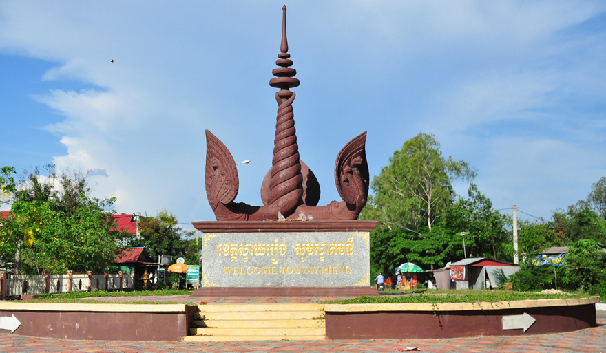

 ខេត្តស្វាយរៀង គឺជាខេត្តមួយដែលស្ថិតនៅអាគ្នេយ៍ (ខាងត្បូងឈៀងខាងកើត) នៃប្រទេសកម្ពុជា។ ហើយទីក្រុងខេត្តស្វាយរៀង មានឈ្មោះថា ទីក្រុងស្វាយរៀង ។ ខេត្តស្វាយរៀងមានព្រំប្រទល់ជាប់ប្រទេសវៀតណាមខាងកើតនឹងខាងត្បូង និងខេត្តព្រៃវែងខាងលិចនឹងខាងជើង។ តាមលក្ខណៈភូមិសាស្ត្រខេត្តស្វាយរៀង។ តំបន់នេះជាផ្នែកមួយនៃកសិកម្មរបស់កម្ពុជាជាចម្បង ដោយការធ្វើកសិកម្មជាសកម្មភាពសេដ្ឋកិច្ចសំខាន់។ ការដាំដុះស្រូវគឺជាការអនុវត្តកសិកម្មលេចធ្លោរួមជាមួយនឹងដំណាំផ្សេងទៀតដូចជាពោត ដំឡូងមី និងកៅស៊ូ។ ខេត្តស្វាយរៀង មានប្រវត្តិដ៏យូរលង់នឹងបេតិកភណ្ឌវប្បធម៌ដ៏សម្បូរបែប។ ខេត្តស្វាយរៀងត្រូវបានគេស្គាល់ថាសម្រាប់តួនាទីដ៏សំខាន់របស់ខ្លួនក្នុងអំឡុងសង្គ្រាមវៀតណាម ជាពិសេសសមរភូមិស្វាយរៀងក្នុងឆ្នាំ១៩៧១។ ខេត្តនេះក៏មានវត្តអារាម និងកន្លែងប្រវត្តិសាស្ត្រជាច្រើនដែលទាក់ទាញភ្ញៀវទេសចរផងដែរ។ ស្វាយរៀងបានឆ្លងកាត់ការអភិវឌ្ឍន៍មួយចំនួន រួមទាំងការកែលម្អហេដ្ឋារចនាសម្ព័ន្ធ និងការតភ្ជាប់ផ្លូវគមនាគមន៍ផងដែរ។ សាកលវិទ្យាល័យស្វាយរៀង បង្កើតឡើងក្នុងឆ្នាំ២០០៧ ផ្តល់ឱកាសសិក្សាថ្នាក់ឧត្តមសិក្សាដល់និស្សិតក្នុងស្រុក។ ខេត្តស្វាយរៀង ផ្តល់នូវទិដ្ឋភាពនៃជីវភាពរស់នៅបែបជនបទរបស់ខ្មែរ ជាមួយនឹងទេសភាពកសិកម្ម និងសារៈសំខាន់ជាប្រវត្តិសាស្ត្រ។ ខេត្តស្វាយរៀងជាកន្លែងមួយដែលភ្ញៀវទេសចរអាចស្វែងយល់ពីជនបទ ស្វែងយល់ពីវប្បធម៌ក្នុងតំបន់ និងទទួលបានបទពិសោធន៍ពីសម្រស់ធម្មជាតិនៃតំបន់។រឿងព្រេងដែលមានទាក់ទងនឹងខេត្តនេះដោយនាម “ស្វាយអង្គ” មានដូចតទៅ ៖ មានសេចក្ដីដំណាលថា កាលពីរាជធានីនៅលង្វែក មានបុរសម្នាក់ឈ្មោះ “សំរិទ្ធ” ជាអ្នកខ្លាំងពូកែអង់អាចណាស់ និងមានផ្ទះនៅលើទីទួលនេះ ។ កាលដែលស្រុក កើតមានចម្បាំងជាមួយសៀម ព្រះរាជាក៏ទ្រង់អំពាវនាវដល់អាណាប្រជានុរាស្រ្ដគ្រប់ខេត្ដ ខណ្ឌ បើនរណាខ្លាំងពូកែអង់អាចនោះ សូមឱ្យចូលខ្លួនទៅបម្រើក្នុងកងទ័ព ដើម្បី បង្ក្រាបខ្មាំងសៀម ដែលចូលមករាតត្បាតអាណាខេត្ដខ្មែរ នៅតំបន់ប្រទល់ដែនក្នុងខេត្ដបាត់ដំបង និងសៀមរាប ។ បុរសសំរិទ្ធ ក៏ស្ម័គ្រចិត្ដចូលខ្លួនទៅតាមព្រះរាជតម្រាស់អំពាវនាវនោះ ។ គាត់បានប្រុងប្រៀបរៀបចំខ្លួន និងប្រដាប់ប្រដា មានគ្រឿងសាស្រ្ដាវុធ និងអាវតេជៈជាដើមរួចស្រេច លាប្រពន្ធកូនធ្វើដំណើរ ឆ្ពោះទៅកាន់រាជធានីលង្វែក ដោយថ្មើរជើង ។ លុះទៅដល់លង្វែកហើយ គាត់បានទៅរកជួបមេទ័ព ដើម្បីប្រគល់ខ្លួនគាត់តាមរដ្ឋត្រូវការ ។ ឯលោកមេទ័ព កាលបើបានពលរេហ៏ល្មមគ្រប់គ្រាន់ហើយ ក៏តាំងបុរសសំរិទ្ធ ជាមេទ័ពធំ ឱ្យលើកព្យុយាត្រាឆ្ពោះទៅបាត់ដំបង ដើម្បីកំចាត់ពួកសត្រូវ ។ លុះទៅដល់សមរភូមិ បុរសសំរិទ្ធ ក៏ចាប់ប្រយុទ្ធយ៉ាងស្វាហាប់ លុះត្រាតែទ័ពសៀមបរាជ័យរត់ខ្ចាត់ខ្ចាយអស់ ។ដោយឬទ្ធីតេជៈរបស់បុរសសំរិទ្ធ ទ័ពសៀមក៏បាក់បបខ្លបខ្លាច លែងហ៊ានចូលមករុករាតត្បាតទឹកដីខ្មែរ តទៅទៀត ស្រុកក៏បានសាន្ដត្រាណ ។ បុរសសំរិទ្ធ ក៏លើកទ័ពមករាជធានីលង្វែកវិញ ហើយបានទូលព្រះរាជាតាមដំណើរដែលខ្លួនបានទទួលជ័យជំនះលើទ័ពសៀម ហើយសុំព្រះរាជានុញ្ញាតក្រាបទូល ត្រឡប់ទៅស្រុកកំណើតវិញ ។ ព្រះរាជាទ្រង់ព្រះរាជានុញ្ញាតតាមការសុំ ។ បុរសសំរិទ្ធ បានធ្វើដំណើរត្រឡប់ឆ្ពោះទៅស្រុកវិញ មកដល់ភូមិដូនពេញក៏ឈប់សម្រាកនៅទីនោះ១យប់ ទើបធ្វើដំណើរ តទៅទៀត ទៅដល់ពាក់កណ្ដាលផ្លូវ ក៏ឈប់ស្រាយសំពាយរបស់គាត់មើល ។ បានទៅដល់ហើយ ប្រពន្ធគាត់បានយកគ្រាប់ស្វាយ ដែលទុំរលួយសាច់អស់នៅក្នុងបង្វេចគាត់ ទៅកប់ដាំនៅជាយរបង មិនយូរប៉ុន្មានស្វាយក៏ដុះឡើងបែកមែកធាង មានផ្កាផ្លែជាហូរហែររៀងមក ។ ស្វាយនេះអ្នកស្រុកនាំគ្នាហៅថា “ស្វាយអង្គរ” ព្រោះជាពូជស្វាយបានមកពីអង្គរ ប៉ុនែ្ដតៗមកពាក្យ “អង្គរ ” ហៅកាត់ ខ្លីមកនៅត្រឹម “អង្គ” បានជាជាប់ពាក្យថា ស្វាយអង្គ ដល់សព្វថ្ងៃ ។ ក្រោយមកបុរសសំរិទ្ធ និងភរិយា ក៏ស្លាប់បាត់ទៅ នៅតែតំណកូនចៅរបស់គាត់ ។ កូនចៅនេះ ខ្លះក៏ទៅនៅឯនោះ ខ្លះក៏ទៅនៅឯនេះ បែកគ្នាទៅនៅតាមប្ដីតាមប្រពន្ធ លុះយូរៗទៅ ទីភូមិរបស់គាត់នេះ ក៏លែងមានមនុស្សនៅ ។ អ្នកស្រុកក៏នាំគ្នាសាងជាវត្ដអារាមមួយឡើង ដាក់នាមថា «វត្ដស្វាយអង្គ» ដោយមានលោកគ្រូចៅអធិការមួយអង្គ ជាអ្នកគ្រប់គ្រង ព្រមទាំងមានភិក្ខុសាមណេរ គង់នៅជាច្រើន។ កន្លងមកទៀត ដោយមានការទទើសទទែងក្នុងទីវត្ដផង មានសត្វស្លាបផ្សេងៗ ទំនៅលើដើមស្វាយនោះផង នាំឱ្យមិនស្អាតផង មានការខ្វះខាតគ្រឿងសេនាសនៈផង លោកគ្រូ ចៅអធិការ បានឲ្យភិក្ខុសាមណេរ កាប់រលំដើមស្វាយនោះ តែដោយរិទ្ធីដើមស្វាយធំនោះ ភិក្ខុសាមណេរកាប់មួយថ្ងៃ បានតែពាក់កណ្ដាលដើម នៅសល់ប៉ុន្មាននឹងកាប់នៅថ្ងៃខាងមុខទៀត លុះព្រឹកឡើងស្រាប់តែស្នាមកាប់ទាំងប៉ុន្មាន ដែលបានកាប់ខ្លះទៅហើយនោះក៏ដុះសាច់ ដុះសំបកគ្របជិតដើមវិញ។ គួរឱ្យអស្ចារ្យណាស់ លោកគ្រូ ក៏ឲ្យភិក្ខុសាមណេរកាប់ទៀត ពីថ្ងៃទល់ល្ងាច តែទោះជាខំកាប់យ៉ាងណា ក៏បានត្រឹមតែពាក់កណ្ដាលដើម លុះព្រឹកឡើង ឃើញដុះសាច់ ដុះសំបកដើមដដែលទៀត ។ ថ្ងៃមួយបានឱ្យភិក្ខុសាមណេរជាច្រើនអង្គ ដោយមានពូថៅគ្រប់ដៃ ហើយលោកប្រាប់ថា នាំគ្នាកាប់ឱ្យរលំក្នុងថ្ងៃនេះ ឱ្យហើយស្រេចតែម្ដង ។ ដើមស្វាយ ទ្រំាមិនបាននឹងពូថៅច្រើនពេក ក៏រលំ ប៉ុន្ដែស្លឹកវាមិនបានស្រពោនឡើយ បែរទៅជាដុះមែកខ្នែងចេញផ្លែផ្កាដូចធម្មតា ។ នៅពេលយប់គេឮតែសូរស័ព្ទភ្លេងពិណពាទ្យ ប្រគំយ៉ាងលន្លង់លន្លោច ធ្វើឱ្យអ្នកស្រុកស្ងើចអស្ចារ្យ មិនយូរប៉ុន្មាន លោកគ្រូចៅអធិការក៏កើតជំងឺឈឺជាខ្លាំង រវើរវាយ រហូតដល់ក្លាយទៅជាឆ្កួតវង្វេង ។ ចំណែកភិក្ខុសាមណេរ កាលបើឃើញហេតុអស្ចារ្យ ដូច្នេះ ក៏រត់ចោលអារាមនោះអស់ទៅ ។ ឧបាសក ឧបាសិកា ក៏នាំគ្នាទៅកសាង វត្ដថ្មីទៀត នៅចម្ងាយប្រមាណជា ១គ.ម អំពីវត្ដស្វាយអង្គចាស់នេះ ដែលសព្វថ្ងៃ គេឲ្យឈ្មោះថា វត្ដស្វាយផ្អែម វិញ ។ ប្រជាពលរដ្ឋបាននិទានតៗគ្នាអំពីព្រឹត្ដិការណ៍ដែលបានកើតឡើង ជុំវិញរឿងហេតុនិងហេតុភេទអស្ចារ្យ អំពីដើមស្វាយ ។ [២]